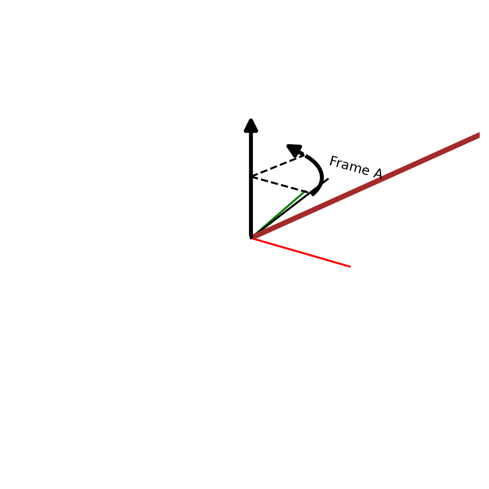

from pytransform3d import rotations as pr
from pytransform3d.plot_utils import plot_vector, remove_frame
import matplotlib.pyplot as plt
import numpy as np
# Plot the original frame: Frame A
frame_A = pr.plot_basis(R=np.eye(3), s=0.8, p=0, ax_s=1, label="Frame A")
# Remove the axis
remove_frame(frame_A)
def rotation_matrix(angle,axis):
match axis:
case 'x':
return np.array([[1, 0, 0],
[0, np.cos(angle), -np.sin(angle)],
[0, np.sin(angle), np.cos(angle)]])
case 'y':
return np.array([[np.cos(angle), 0, np.sin(angle)],
[0, 1, 0],
[-np.sin(angle), 0, np.cos(angle)]])
case 'z':
return np.array([[np.cos(angle), -np.sin(angle), 0],
[np.sin(angle), np.cos(angle), 0],
[0, 0, 1]])
case _:
raise ValueError("WHY DID YOU PUT A DIFFERENT THING IN IT!!!!!!!!!")
# Define the rotation matrix at a particular axis
angle = np.deg2rad(70)
axis = 'z'
R = rotation_matrix(angle,axis)
def plot_p_origin_B_in_A(vec,vec_color):
plot_vector(
# A vector is defined by start, direction, and s (scaling)
start=np.zeros(3), direction=vec,
s=1,
ax_s=1, # Scaling of 3D axes
lw=0, # Remove line around arrow
color=vec_color)
# Define the origin of Frame B with respect to Frame A
p_origin_B_in_A = np.array([2,2,1]) # x = 2, y = 2, z = 1
plot_p_origin_B_in_A(p_origin_B_in_A,"Brown")
# Plot Frame B
frame_B = pr.plot_basis(R=R, s=1, p=p_origin_B_in_A, ax_s=1, label="Frame B")
remove_frame(frame_B)
def plot_vec_in_B(vec,R,p, vec_color):
global axis
match axis:
case 'x':
a = np.array([1, 0, 0, angle])
case 'y':
a = np.array([0, 1, 0, angle])
case 'z':
a = np.array([0, 0, 1, angle])
case _:
raise ValueError("Thats not even an axis Bozo")
pr.plot_axis_angle(frame_A, a=a, p=np.zeros(3))
plot_vector(start=p_origin_B_in_A, direction=vec, color=vec_color, s=1, ax_s=1, label='vector')
# Define a vector in Frame B
vec_1_B = np.array([0.5,0.5,0.5])
print("vec_1_B", vec_1_B)
# Plot vec_1_B
plot_vec_in_B(vec_1_B, R, p_origin_B_in_A, "Orange")
def homogeneous_transformation(R,p,vec):
T = np.zeros((4,4))
T[0:3,0:3] = R
T[0:3,3] = np.array([p, 1])
return np.multiply(T,vec)
# Show the plot
plt.show()vec_1_B [0.5 0.5 0.5]